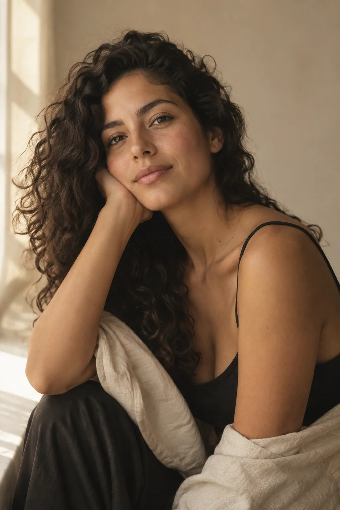
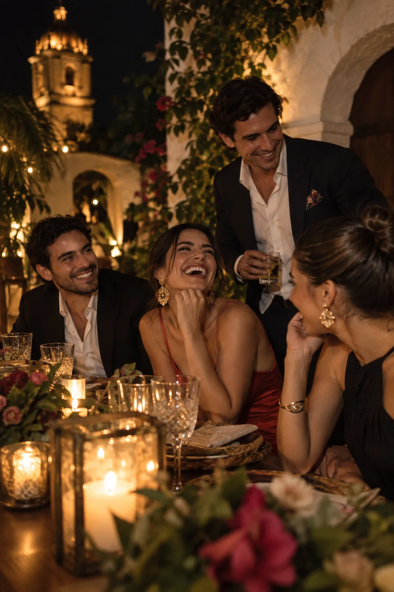
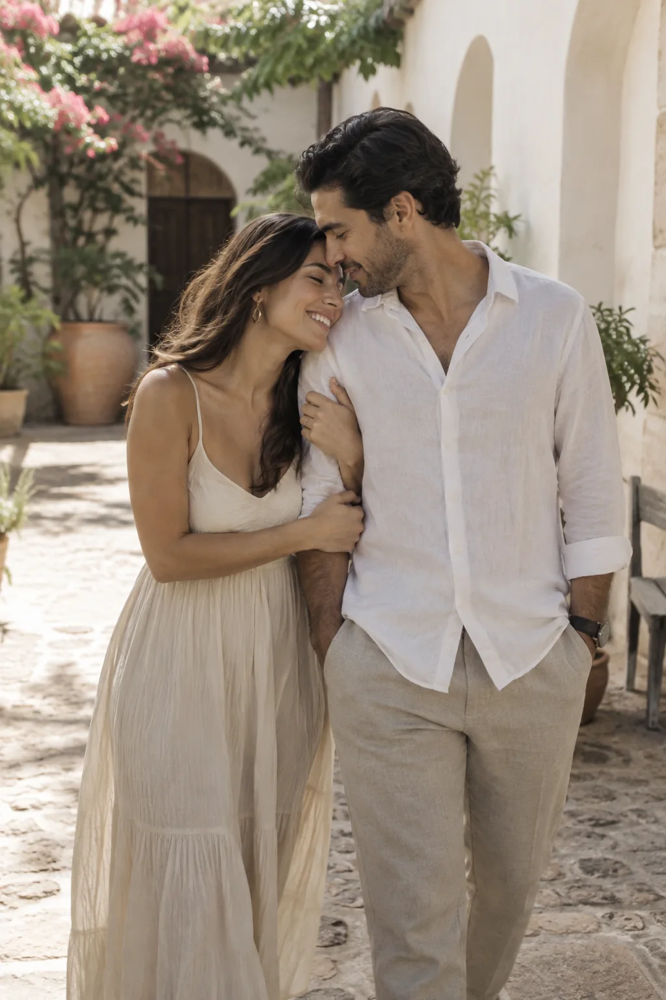
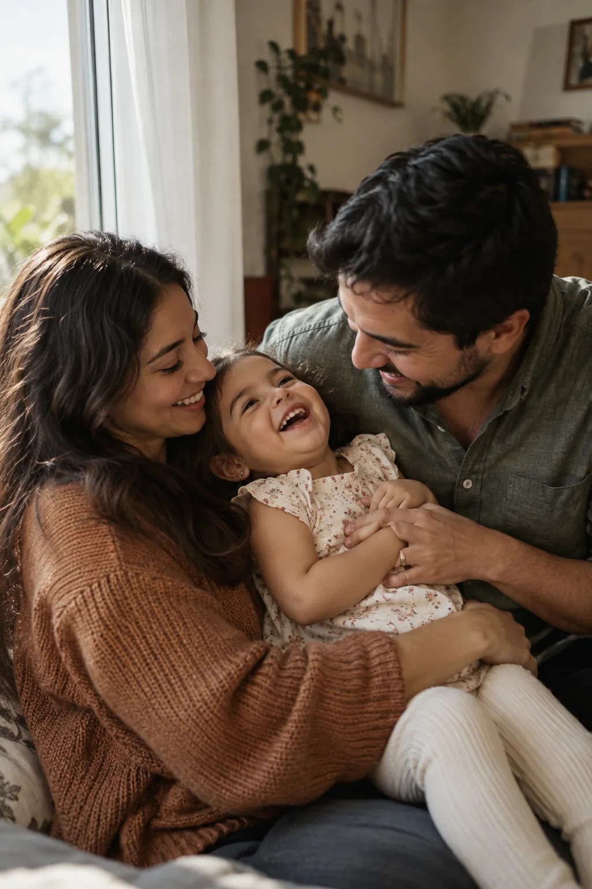
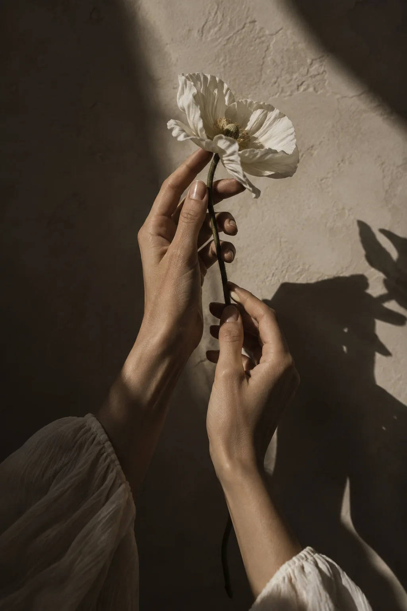

01 / RETRATOS
PORTAFOLIO
Una selección de momentos, vínculos e ideas vistos desde mi lente.





Cada sesión nace de una historia diferente. Estas imágenes presentan el estilo visual del estudio.
TU TURNO